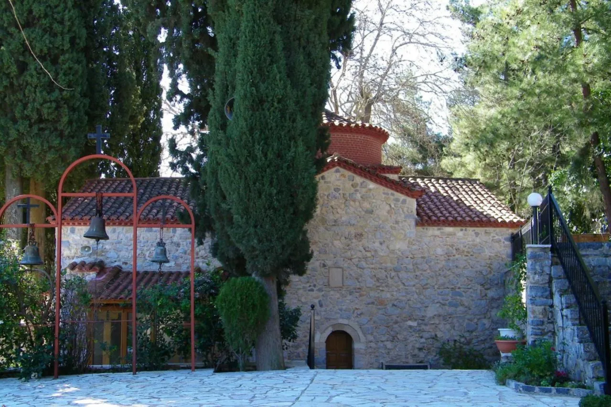
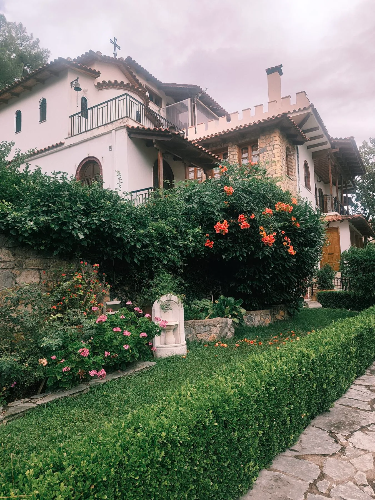
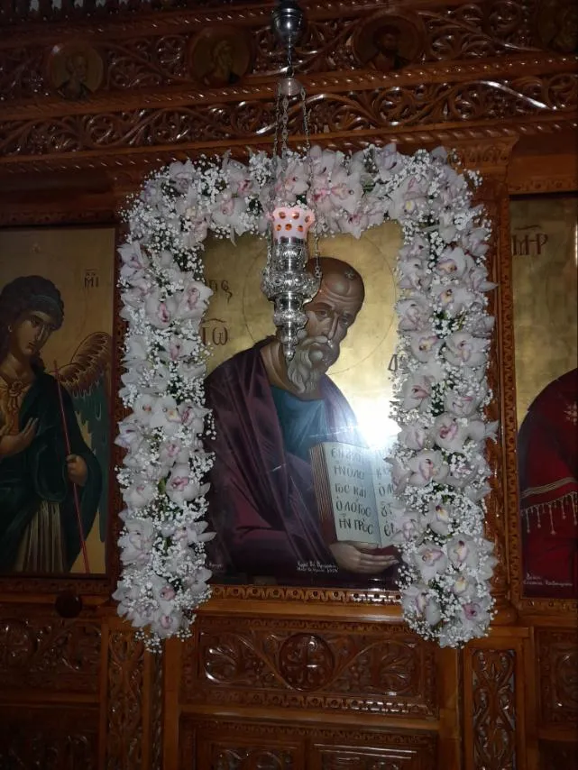
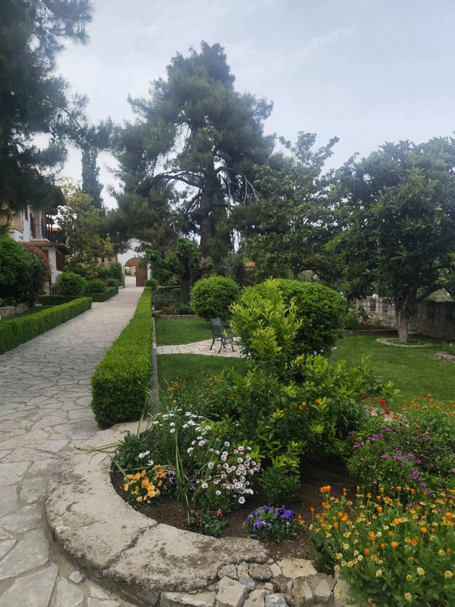

Ολοκλήρωση των εργασιών συντήρησης του Καθολικού
Με την χάρη του Θεού ολοκληρώθηκαν οι εργασίες συντήρησης των τοιχογραφιών του κεντρικού ναού...

Ένας ιστορικός τόπος προσευχής και ορθοδόξου μοναχικής ζωής στη γη της Βοιωτίας.
Στις παρυφές της Βοιωτικής γης, η Ιερά Μονή Αγίου Ιωάννου του Θεολόγου στο Μαζαράκι αποτελεί έναν πνευματικό πνεύμονα που χρονολογείται από τον 16ο αιώνα.
Ιδρυμένη σε μια εποχή που η πίστη αποτελούσε το μοναδικό στήριγμα του γένους, η μονή διασώζει μέχρι σήμερα την αυθεντική μοναστική παράδοση. Οι πέτρινοι τοίχοι της, οι ήχοι του σημαντρου και η ησυχία του τοπίου προσκαλούν κάθε προσκυνητή σε μια εσωτερική ανάβαση.

ΚΑΘΗΜΕΡΙΝΩΣ & ΚΥΡΙΑΚΕΣ
Η ημέρα ξεκινά με την πρωινή δοξολογία και την τέλεση της Θείας Λειτουργίας.
ΚΑΘΗΜΕΡΙΝΩΣ
Η ακολουθία του Εσπερινού, προσφέροντας πνευματική ανάπαυση στο κλείσιμο της ημέρας.
Μνήμη του Αγίου Ενδόξου Αποστόλου και Ευαγγελιστού Ιωάννου του Θεολόγου.
Πρώτες αναφορές για την ύπαρξη μοναστικού οικισμού και ανέγερση του αρχικού καθολικού.
Η Μονή αποτελεί κρησφύγετο αγωνιστών και κέντρο ανεφοδιασμού κατά την Ελληνική Επανάσταση.
Με το διάταγμα της Αντιβασιλείας του Όθωνα, η μονή διαλύεται και περιέρχεται σε παρακμή.
Έναρξη εργασιών αναστήλωσης και εγκατάσταση νέας μοναστικής αδελφότητας.
Η μονή αναγνωρίζεται επίσημα ως ενεργή γυναικεία κοινοβιακή ιερά μονή.


"Η εργασία του μοναχού είναι η προσευχή, και η προσευχή του μοναχού είναι η εργασία."
Η καθημερινότητα στη Μονή Μαζαρακίου ακολουθεί τον παραδοσιακό ρυθμό του Κοινοβίου. Η ημέρα διαιρείται μεταξύ της λατρείας, της μελέτης και των διακονημάτων. Κάθε πράξη, από την πιο απλή εργασία μέχρι την ολονύκτια αγρυπνία, προσφέρεται ως θυσία αγάπης προς τον Θεό και τον πλησίον.
Η έκφραση της προσφοράς μέσα από την τέχνη και τη χειροτεχνία.
Ενημερωθείτε για τη ζωή και τις δράσεις της Μονής.
Με την χάρη του Θεού ολοκληρώθηκαν οι εργασίες συντήρησης των τοιχογραφιών του κεντρικού ναού...

Η Ιερά Μονή ανακοινώνει την έκδοση του νέου πονήματος σχετικά με τον βίο του Αγίου Ιωάννου του Θεολόγου...

Προσκαλούμε τους πιστούς στην Ιερά Αγρυπνία που θα τελεστεί την Παρασκευή προς τιμήν των Αγίων Πάντων...
Μαζαράκι Βαγίων, Τ.Κ. 32002, Βοιωτία, Ελλάδα
Καθημερινά: 09:00 - 13:00 & 16:00 - Δύση Ηλίου
Παρακαλούνται οι επισκέπτες να τηρούν τον ενδυματολογικό κώδικα (σεμνή εμφάνιση).
Από την Εθνική Οδό Αθηνών-Λαμίας, έξοδος προς Θήβα και συνέχεια προς Βάγια/Μαζαράκι.